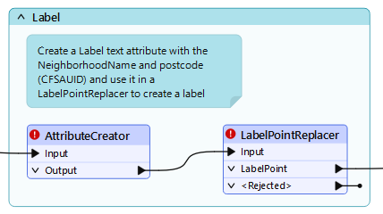
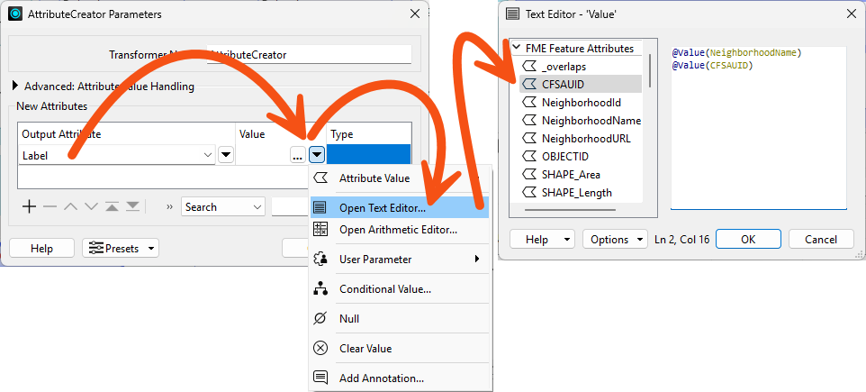
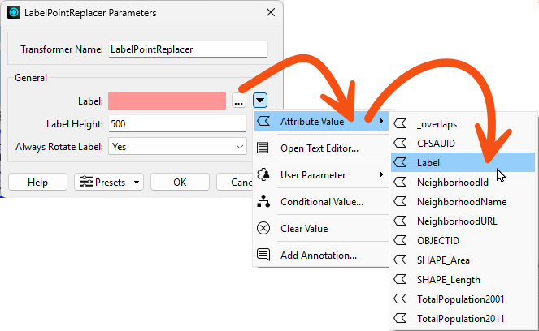
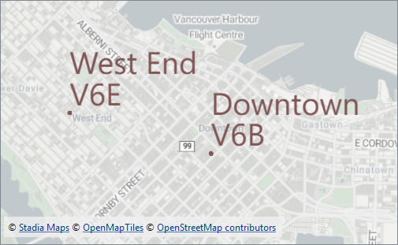

After completing this course, you'll be able to:
Let's briefly put attributes to one side and look at transformer parameters.
Transformer parameters are often set in a fixed way (hard-coded) or set to take on the value of a particular attribute. However, just as you can construct attributes using the Text or Arithmetic Editor, you can build values for transformer parameters.
As noted, most transformer parameters allow the user to select an attribute value instead of manually entering a fixed value. For example, the LabelPointReplacer can create a label whose contents and height are specified by attribute values:
This feature is helpful because it allows the parameters (for example, label size) to get a different value for each feature. An attribute could be read from a source dataset or calculated using an ExpressionEvaluator so that one feature creates a label ten units in height, another creates a label 15 units high, and so on. It is no longer a fixed value.
If you need to calculate or construct a parameter value, you can use integrated string and numeric editors built into parameter dialogs instead of a separate transformer.
For example, here, the user is choosing to calculate label height using an arithmetic calculator:
The calculator allows the selection and use of FME attributes, other parameters, and mathematical and string-based functions. For example, here, the user has chosen to calculate the height of their labels using the logarithm of the visitor count for a park:

It's a fixed rule that the editor dialogs available depend on the parameter type. For instance, the Label parameter in a LabelPointReplacer opens a text editor because it requires a text value. In contrast, the Label Height parameter opens an arithmetic editor because it requires a numeric value.
Workspaces are more compact when as many peripheral operations as possible are directly integrated into a single transformer or parameter. However, as with attributes, it's important to add proper annotation, or it's difficult for a casual observer to understand what the workspace is doing.
Another drawback specific to parameters is that constructing them in situ means you don't get the information as an attribute to use elsewhere. For example, if you construct a label string in the LabelPointReplacer, that string isn't available as an attribute elsewhere in the workspace.
If you need to use this constructed value in multiple places, creating it as an attribute is essential.
Jennifer would like to create and construct some new attributes.
Jennifer opens the starting workspace (C:\FMEData\Workspaces\TransformAttributes\constructing-transformer-parameters.fmw) in FME Workbench (2025.0.1 or later).
Jennifer chose to use an AttributeCreator in this bookmark:

She will use the AttributeCreator to create a new attribute called Label and then use that attribute to set the label text in the LabelPointReplacer. This method has the advantage that the Label attribute will be available for use later in the workspace, if needed.
She double-clicks the AttributeCreator to open its parameters.
She creates a new Output Attribute called Label and uses the Text Editor to set its value to:
@Value(NeighborhoodName)@Value(CFSAUID)
The line break here is intentional to improve label readability.

The label will report the neighborhood name and, in a new line, the first three digits of the neighborhood's most central postcode.
Her dialog looks like this:

She clicks OK.
Jennifer double-clicks the LabelPointReplacer to open its parameters.
Now that the Label attribute is available for use, she selects it to provide the value for Label Text:

She clicks OK.
Jennifer runs her workspace.
She clicks the Labels writer feature type and chooses View Written Data.
She sees her new labels in Visual Preview's Graphics view:

Jennifer saves her workspace and shares it with her colleagues for feedback. She successfully used attribute managing transformers to edit her data's schema, constructed attributes, and used attributes to supply values to transformer parameters.